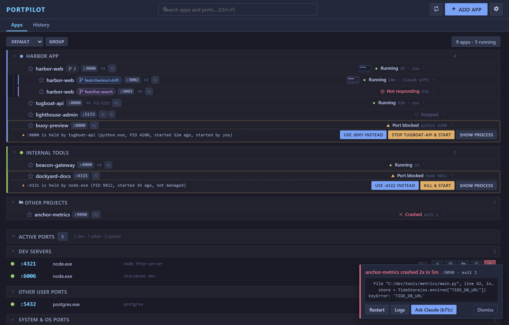
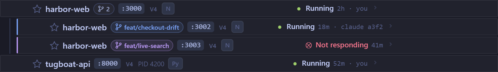
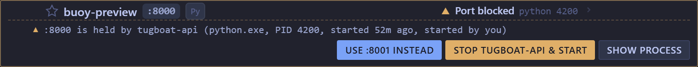
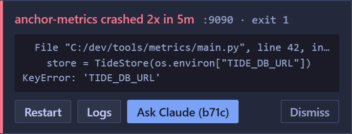

Status line
Every session shows what is up, worst state first. A ✦ marks apps Claude started.
⚓ 1 crashed · 6 up · :3000 harbor-web
PortPilot 3.4 · free · MIT
PortPilot runs your local dev servers. With the Claude Code plugin, Claude sees the same apps, ports and crashes you do, and reuses a running server instead of starting a second copy.
Windows 10/11 and Linux. Any MCP assistant can drive it too.

> npm run dev
PortPilot: harbor-web is already running on :3000 - reuse http://localhost:3000 instead of starting a second copy.
✕ anchor-metrics crashed · :9090 · exit 1
KeyError: 'TIDE_DB_URL'
Fix itRestartLogsDismiss
One install gives Claude the PortPilot tools, a status line, a guard on dev-server starts and a crash band.
Every session shows what is up, worst state first. A ✦ marks apps Claude started.
⚓ 1 crashed · 6 up · :3000 harbor-web
A start on a busy port is turned away with the URL to reuse. A clean start goes through PortPilot. If the guard can't tell what a command does, it lets it run.
reuse http://localhost:3000
When an app Claude started crashes, the session gets a band with Restart, Logs and Fix it. Fix it hands Claude the crash and the stderr tail.
✕ anchor-metrics · exit 1
Install in Claude Code
/plugin marketplace add m4cd4r4/PortPilot
/plugin install portpilot@portpilotThe MCP server is bundled: no npm install.
Each row now tells you what is happening and who did it.
Every app shows its state, how long it has been in it and who started it: you, or a Claude Code session. A crashed app reads ✕ Crashed · exit 1. The VS Code tree uses the same states.

When something else holds an app's port, the row says what holds it and offers Use free port, Kill & start or Show process. Kill asks for a second click.

A crash raises a sticky toast with the stderr tail. Ask Claude appears when the session that started the app is still open, and sends it the crash. Repeat crashes group into one toast.

The PortPilot MCP server gives your assistant 20 tools: list, start, stop, scan, kill, group and more.
The desktop app opens no network port. The opt-in web portal stays on your machine, behind six layers.
Threat model and limits in SECURITY.mdFree and open source. No account and no admin rights. Install it, click Scan, then add your projects.
From source: npm install then npm start on GitHub. Older builds on Releases.